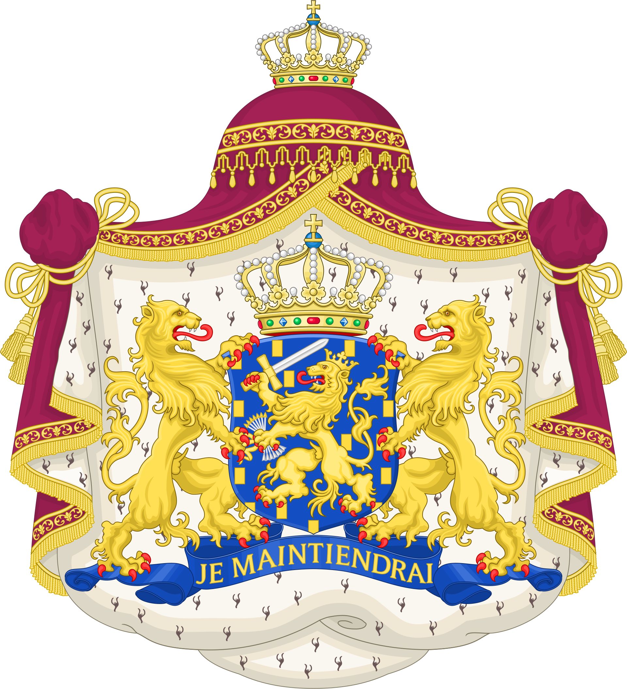

Pays-Bas
Wilhelmus van Nassouwe
Les Pays-Bas
Les Pays-Bas sont un pays situé au nord-ouest de l'Europe et réputé pour son paysage plat composé de canaux, de champs de tulipes, de moulins à vent et de pistes cyclables. Amsterdam, la capitale, accueille le Rijksmuseum, le musée Van Gogh et la maison dans laquelle Anne Frank a vécu clandestinement et a rédigé son journal intime pendant la Seconde Guerre mondiale.
Les demeures le long des canaux et les nombreuses œuvres d'artistes tels que Rembrandt et Vermeer sont les vestiges du "siècle d'or" de la ville dans les années 1600.
La capital, Amsterdam
Amsterdam, capitale des Pays-Bas, est connue pour son patrimoine artistique, son système élaboré de canaux et ses étroites maisons à pignons, héritage de l'âge d'or de la ville, le XVIIe siècle.
Le quartier des musées accueille le musée Van Gogh, le Rijksmuseum, présentant les œuvres de Rembrandt et de Vermeer, ainsi que le Stedelijk Museum, dédié à l'art moderne. Le vélo contribue pour beaucoup au caractère de la ville, qui compte un nombre élevé de pistes cyclables.
Musée Van Gogh
La collection du Musée Van Gogh d’Amsterdam est la plus grande du monde avec plus de 200 tableaux, 500 dessins et près de 700 lettres manuscrites (notamment la correspondance avec son frère Théo). Cependant, les pièces sont exposées par roulement. Ce qui signifie que le visiteur ne voit qu’une cinquantaine d’œuvres à la fois.
Ce musée extraordinaire qui attire plus d’un million de visiteurs par an, n’expose pas que des toiles de Van Gogh, mais aussi des œuvres d’artistes contemporains qui influencèrent le peintre ou furent influencés par lui. Ainsi on peut y admirer les peintures d’Emile Bernard, Gustave Boulanger, Jules Breton, Maurice Denis, Paul Gauguin, Claude Monet, Camille Pissaro, Paul Signac, Henri de Toulouse-Lautrec, Georges Seurat, Kees van Dongen ou encore Lawrence Alma-Tadema.
La présentation de la collection permet de suivre chronologiquement le développement artistique de Van Gogh et de comparer ses peintures aux oeuvres d’autres artistes du XIXe siècle. Le musée propose également diverses expositions sur des sujets variés touchant à l’histoire de l’art du XIXe.

Le Rijksmuseum Amsterdam, plus couramment abrégé en Rijksmuseum, est un musée national néerlandais, situé dans la capitale Amsterdam et consacré aux beaux-arts, à l’artisanat et à l’histoire du pays. Il est le plus important musée des Pays-Bas quant à la fréquentation et au nombre d'œuvres d'art avec plus de 2 450 000 visiteurs en 2014 pour un fonds d'environ un million de pièces.
Situé entre le Stadhouderskade et la Museumplein, dans le Museumkwartier, il présente au public, à travers plus de 200 salles d’expositions, une vaste collection d'art, principalement de peintures du siècle d'or néerlandais ; au Rijksmuseum est notamment attaché le Rijksprentenkabinet. Le musée possède en outre une riche collection d’objets d'art asiatiques.
Rotterdam
Rotterdam est une importante ville portuaire de la province néerlandaise de Hollande-Méridionale. Les navires anciens et les expositions du musée maritime retracent l'histoire navale de la ville.
Le quartier de Delfshaven, datant du XVIIe siècle, regorge de boutiques le long du canal ; c'est également le site de l'église des Pères pèlerins, où les pèlerins se recueillaient avant de naviguer vers l'Amérique.
Après avoir été presque totalement reconstruite à la suite de la 2nde Guerre mondiale, la ville est à présent connue pour son architecture moderne et audacieuse.

Le Port de Rotterdam
Le port de Rotterdam (Haven van Rotterdam en néerlandais) est en 2015 le huitième port du monde en termes de trafic total, le onzième mondial pour le trafic de conteneurs et le plus grand port européen avec 12,3 millions d'EVP et 444 millions de tonnes de marchandises traitées.
Le port de Rotterdam est situé sur la façade nord-ouest de l'Europe, il est le principal port du range nord-européen, c'est une vaste zone industrialo-portuaire bordant la principale embouchure du Rhin, reliée à un Hinterland (un arrière-pays qui reçoit et qui approvisionne le port en marchandises) couvrant toute la vallée du Rhin et de ses affluents.
Il mesure 42 km de long jusqu'à la mer du Nord et couvre 124 km2. Ce port est en constant développement depuis le xiie siècle (nouveaux bassins, zones industrielles, terre-pleins, voies de communications...).
Chaque année, au mois de septembre, les Journées portuaires mondiales ont lieu dans le port de Rotterdam. Cet événement permet de découvrir le port de plus près.

Euromast Rotterdam
L'une des plus hautes tours en Hollande est à Rotterdam et se nomme l’Euromast. L’architecte Maaskant a conçu la tour dans le cadre de la Floriade. Les visiteurs peuvent prendre l'ascenseur et profiter d'une vue spectaculaire. La plus haute construction à Rotterdam.
En 1960, l'Euromast a été conçu pour la Floriade de cette année-là. Elle devait être la construction la plus élevée de Rotterdam avec plus de 100 m. Mais déjà quelques années plus tard, un autre bâtiment reçut ce titre, suite à quoi il a été décidé d'élever l’Euromast en hauteur : 85 m ont donc été ajoutés à la construction. L'Euromast n’est d’ailleurs pas la plus haute structure de la Hollande. Cet honneur revient à la tour de radio à Lopik : la Tour Gerbrandy avec 361 m.
La vue depuis la tour est spectaculaire. Par temps clair, vous pouvez voir loin, même jusqu'à 80 km et voir la ville belge d'Anvers. Avec un billet, vous avez accès à la fois à la plateforme à 100 m, et à l'Euroscoop à 185 m d'altitude. Le restaurant est situé à 100 m où vous pourrez déguster un vrai « high tea ». Vous pourrez bien sûr prendre un brunch, un lunch ou même un dîner. Saviez-vous que vous pouvez aussi passer la nuit sur l’Euromast ? Très haut, au-dessus de la ville, il y a plusieurs suites où vous pourrez séjourner dans le luxe et d’où vous pourrez admirer le plus beau coucher et le plus lever du soleil.